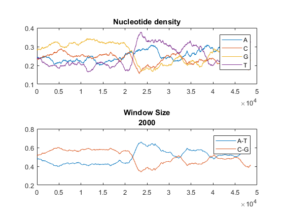
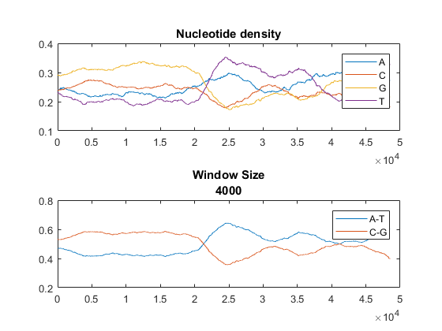
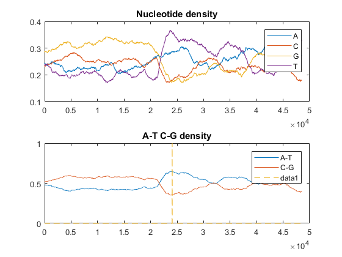

ECES T580 Lab 7
Bhautik (Brian) Amin
Contents
Lab 7.1.1
Grab sequence data (Only the sequence)
seq = getgenbank('NC_001416', 'SequenceOnly',true);
Total length of the sequence
l = length(seq)
l =
48502
Measure the local base compositon by Using a sliding window of variable size Plot the density of nucleotides using window size of 2000bp, 3000bp, and 4000bp
2000 bp:
figure(1) ntdensity(seq, 'Window',2000) title({'Window Size', '2000'})
3000 bp:
figure(2) ntdensity(seq, 'Window',3000) title({'Window Size', '3000'})
4000 bp:
figure(3) ntdensity(seq, 'Window',4000) title({'Window Size', '4000'})
Lab 7.2.1
% Generate random transition and emisiosn matrix % Two hidden states N and M % Four possible observations A, T, C, G TRAN = rand(2,2); EMIS = rand(2,4); % Normalize TRAN(1,:) = TRAN(1,:) ./ (norm( TRAN(1,:), 1)); TRAN(2,:) = TRAN(2,:) ./ (norm( TRAN(2,:), 1)); EMIS(1,:) = EMIS(1,:) ./ (norm( EMIS(1,:), 1)); EMIS(2,:) = EMIS(2,:) ./ (norm( EMIS(2,:), 1)); % Encode the sequence into integers seq_int = nt2int(seq); % Use hmmtrain to update the transition and emission matrix % hmmtrain estimates the transition and emission probabilities % for a hidden markov model. % Input initial TRAN and EMIS guess, Outputs estimates) [TRAN_EST, EMIS_EST] = hmmtrain(seq_int, TRAN, EMIS,'Algorithm','Viterbi'); % Use hmmviterbi to infer the hidden state of the observations STATES = hmmviterbi(seq_int, TRAN_EST, EMIS_EST); % Plot NT density and change points together figure(4) ntdensity(seq); hold on plot(STATES-1, '--') hold off